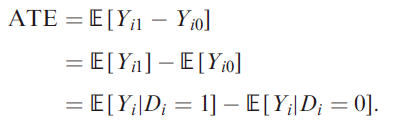
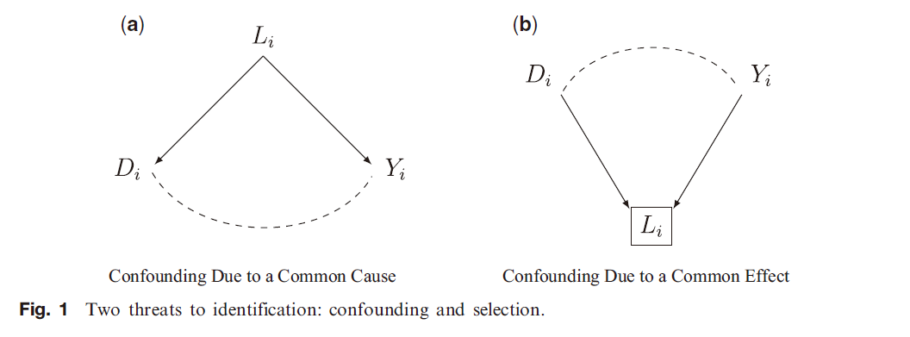

收录于合集 #因果推断 1个

作品简介
作者： Luke J. Keele，现为宾夕法尼亚大学教授，主要研究兴趣是应用统计学以及因果推断在社会科学和医学中的应用。
编译： 兰星辰（国政学人编译员，美国斯坦福大学）
来源： Keele, L. (2015). The statistics of causal inference: A view from political methodology. Political Analysis , 23(3), 313-335.
内容提要
本文作为对因果推断入门式的介绍，深入浅出、较为全面地总结了政治学研究因果推断的相关知识，适合有一定统计学和计量经济学知识储备的政治学背景的读者阅读学习。本文集中介绍了能够对统计估计给出因果解读的极其重要的识别假设，指出了以设计为路径的因果推断的重要性，并且回顾了因果推断常用的统计方法。
术语翻译
由于本文涉及到的统计学和因果推断的术语较多，译者在这部分整理了译文使用的这些术语的中文翻译。
Causal inference 因果推断
Identification 识别
treatment 处理
potential outcome 潜在结果
stable unit treatment value assumption（SUTVA） 稳定单位处理效果假设
average treatment effect（ATE）
平均处理效应
average treatment effect on the treated
处理组平均处理效应
conditional independence assumpation（CIA） 条件独立性假定
conditional independence exchange-ability（CIE） 条件可交换性假设
randomized experiments 随机实验
natural experiments 自然实验
selection on observables 对观测的选择
partial identification 不完全识别
the design-based approach 基于设计的路径
reducing heterogeneity 减少异质性
falsification tests 扭曲性检验
sensitivity analysis 敏感性分析
pattern specificity 模式识别
Rubin Causal Model(RCM) 鲁宾因果模
Directed Acyclic Graphs(DAG) 有向无环图
01
介绍
科学研究的一个中心任务是建立因果关系。比较政治的一个重要的发现是民主国家参与对人权镇压的可能性比较低。我们可以认为这是一个描述性的发现：即民主治理和更低的镇压水平相关。但是这个描述性的发现马上产生了需要回答的因果问题：如果一个国家变得更加民主，它真的会参与更少的镇压吗？总而言之，我们不满足于统计相关而是希望建立因果联系。
我们都了解因果，因为我们日常生活中经常使用。它一般指一组事件造成另一种事件的关系性的概念。因果推断则是我们提出对因果关系的陈述。尽管因果似乎是一个简单的概念，但是建立因果关系在大多数情况下非常困难。早期的因果模型关注唯一的原因比如重力。重力总是让地球上的物体下落，并且它是造成这种运动的唯一原因。在生物和社会研究中，结果很少有唯一的原因，原因很多时候是偶然的和变化的。在这种情况下，Robin等人提出的反事实因果推断模型就很有用。在这个模型下，我们不仅仅通过可观测的事件定义因果，而是通过可观测的和不可观测的事件一起来定义因果。可以说，如果伊拉克在战争之前是民主国家，那么战争就不会发生。这是一个反事实的陈述，即如果一个原因发生了一个结果就会随之到来。这种反事实的路径基于的想法是一些用于因果推断的信息是不可观测的，因此做因果推断之前必须进行一些假设。
社会科学中经常用数据和统计分析来检验因果假设。过去20年，对反事实因果模型进行说明的潜在结果框架主导了对因果的统计学思考。为什么这个路径非常流行？为什么包括我在内的许多人都认为这是一个实质性进步而不是仅仅改变现存统计概念的标签？原因是，第一反事实路径确实对数据能够反映因果的假设提供了新的想法。特别的，因果推断所需的假设的含义更加明确。第二，它重新强调了研究设计和基于设计的路径的重要性。尽管这个“基于设计的路径”没有统一定义，但是学者们基本都认为在估计前，如果研究设计能够被审慎地建立起来去支持假设，因果推断就会更加可信。
本文将因果推断的统计学分为三个方面：因果识别、基于设计的路径和统计工具。这样划分之后，本文严格区分了识别、设计和统计分析这些概念。
02
识别的基础知识
识别对于因果推断极其重要。按照非正式的定义，如果在观测的数量无限的情况下可以知道模型的参数的真实值，那么这个参数就是可识别的。换句话说，识别难题是，在某些情况下即使观测数量无限，我们也缺乏足够的能够知道参数真实值的信息。统计学有很多识别难题。比如在生态推断中，我们在只知道边缘分布的情况下，识别一个联合（混合）分布的参数是非常困难的。又比如在政治学中，我们基于聚合起来的投票数据对选民情况进行推断也非常困难。另一种识别问题是基于缺失值的推断，但这不是本文的重点。
因果推断 是另一种识别难题，而且只能通过 假设 来解决。我们必须进行识别分析来判断是否能够通过无限的样本计算因果效应。研究者通常是用一个现存的识别分析来进行识别。在目前的社会科学和统计学研究中， 潜在结果框架 （通常被称为鲁宾因果模型（RCM）），是形式化因果推断识别问题的一种通用和主导的框架，尽管它不是唯一的框架。在最基本的潜在结果模型中，每个个体有多种潜在结果但是只有一个在现实发生了的结果可以被观测到。如果将处理D视为一个取值为0和1的二元变量，个体潜在结果是YiD，事实结果是Yi= DiYi1+(1-Di)Yi0。由于事实上个体要么接受了处理要么没接受，所以我们只能观测到个体的一个结果，另一个结果无法观测。在这一框架下，我们可以使用差值Yi1-Yi0或者比值Yi1/Yi0的形式定义Di的单位层次处理效应即潜在结果的比较。但是由于我们无法观测到潜在结果，所以我们也无法估计单位层次因果效应。但是，潜在结果模型的优势在于它没有依赖任何统计模型但却形式化了因果推断的基本问题即处理效应无法同时观测的这一想法。尽管我们无法估计单位层次因果效应，但是一般而言，我们可以关注 总体平均处理效应 ATE=E[Yi1-Yi0]或 处理组平均因果效应 即ATT= E[Yi1-Yi0|Di = 1]。给定 处理独立于潜在结果的假设 下，容易证明

因此，在独立性假设下，不可观测的潜在结果的期望等于可以观测的结果在不同处理状态下的条件期望。如果在加上稳定单元处理效果假设（SUTVA）成立即处理的形式已知且明确（不能模糊）且个体的潜在结果不受其他个体的影响的情况下，我们就可以通过观测数据计算出总体平均处理效应ATE。
通常有下图两种情况容易对识别造成威胁

在左图中，我们可能认为D是Y 的原因，但实际上D独立于Y，D和Y的相关性是由L造成的，这种情况通常被称为 混杂（confounding） 。
在右图中，当D和Y都条件于一个共同效应L，这种情况往往称为 选择（selection） 问题，在这种情况下即使处理独立于潜在产出且混杂因素被排除，我们也不能估计出因果效应。（部分文献特别是早期的文献也通常将这两种情况都用confounding来描述，但并不准确，译者注）
03
识别策略
识别策略简单来说就是解决因果推断识别问题的研究设计。本文指出了八种常用的识别策略。
第一种是 随机实验 ，随机实验是识别策略的黄金标准。在SUTVA假定下，随机实验的核心优势是研究者能够人为地使得处理和潜在产出独立，这使得平均处理效应能够被估计出来，解决了因果推断的最大难题，具有很强的内部效度。当然随机实验也不是万能的，比如它的外部效度通常不足、个体可能不服从处理等问题。
第二种是 自然实验 ，自然实验类似于随机实验，它的思想是来自自然的而不是人为的干预创造了仿佛是随机试验的环境。可信的自然实验比较稀少，外部效度不足，且需要研究者仔细判断他们考察的自然实验到底是不是随机的。比如，Lyall（2009）研究了是否无差别的暴力会增加反叛者的攻击。他将俄罗斯军队对车臣的炮击模式作为自然实验，因为俄罗斯的炮击应该是无差别的而且仿佛是随机的，他也确实发现了就像在随机实验里一样，处理（被炮击）和接受处理前的协变量无关，但是困难在于在这个自然实验中研究者无法确定这个炮击模式究竟是不是随机的，因为研究者无法控制炮击，而且这一研究也缺乏外部效度，因为我们无法知道处理效应发生在在车臣以外的地区会有什么差别。总之，自然实验的随机性和效度需要研究者审慎判断。
第三种是 工具变量（IV） ，工具变量非正式的定义是一个只通过鼓励部分个体接受处理来影响结果的随机的变量。工具变量研究设计可以被认为是一个一些个体被鼓励参与的实验。因此，它的效应往往被称为被鼓励接受处理（Intention- to- treat）效应。工具变量估计了在一个随机鼓励下那些被鼓励参与实验的个体平均因果效应，因此往往也被称为依从者(complier)平均处理效应或局部平均处理效应，局部的意思是因为它是在对依从者这一子集估计的因果效应。在满足五个假设：工具变量的类似随机性；SUTVA；工具变量对结果没有直接影响即排除性限制；单调性；工具变量对处理有非零效应的情况下，可以通过工具变量估计出因果效应。（对IV的更多了解可以阅读Angrist的一系列文献，译者注。）
第四种是 断点回归设计（RDD） 。断点回归设计一般被认为类似自然实验，处理D这一虚拟变量是一个一致的连续协变量S的函数，其中S通常被称为推动变量或者是分数（score），在清晰断点回归设计中，处理是分数的决定性的函数，即所有少于已知的分数界限c的个体被分配到处理组。所有高于c的个体被分配到处理组（如c可能是中国高考一本分数线），模糊断点回归是处理的分配是条件于分数的随机变量，接受处理一定要在c附近有一个不连续的跳跃，这意味着一部分在c以下的个体也有可能接受处理。RDD目前特别在经济学研究中得到了广泛的应用。
第五种是 对观测的选择 。这种策略还被称为条件可忽视性或者无遗漏变量等，这是实证研究中最常使用的策略。研究者通常是找到在条件于可观测的变量的情况下使得处理和潜在产出独立。（这一假定通常也被称为条件独立性假定（CIA），条件可交换性假定（CIE），我们通常在实证中通常进行的回归分析就是隐含了这种假定，它可以被认为是分层随机化实验，译者注）。但是这一假定非常强，也无法通过观测数据证实这个假定，我们必须谨慎使用。
第六种是 带时间数据的对观测的选择 。简要来说包括我们通常处理面板数据采用的固定和随机效应方法、双重或三重差分、（广义）合成控制法等。
第七种是 不完全识别 。有一些变量不能获得精确测度，因各种原因只能估计出参数处于哪个区间，不能获得出一个精确测度。在政治学具体的研究应用可以参考Mebane and Poast(2013)和Keele and Minozzi(2012)。
第八种是 中介分析 。在中介分析中，我们通常把整个的效应分解为直接或者间接的效应，因果中介效应代表了处理通过中介变量M对结果的间接影响。我们需要首先识别出整体因果效应，然后再去分离中介效应，如果不能识别整体因果效应，识别中介效应没什么意义。
04
以设计为基础的路径
作者认为设计为基础的研究路径对于因果推断很重要。尽管以设计为基础的路径没有一个明确的定义，但是这一路径强调设计而不是统计模型，强调研究者需要重视减少异质性、阐明假设、关注内生性等。在这一部分作者提出了在这一路径下需要注意的四个情况。认为通过对这种情况的分析可以提高因果推断的信度。这些情况可以和识别策略结合在一起，帮助研究者说明他的研究更可能排除了替代性解释以及偏差。（可以理解为类似于实证研究中比较传统的稳健性检验，译者注）
第一种情况是 减少异质性 。在因果推断中，一个重大的挑战是将因果效应从个体和处理状态相关的特征中分离。如果个体在处理之前完全相等，那么接受处理之后的任何变化都可以被归因于处理的效果。但社会科学研究中的个体往往有很强的异质性。在随机实验中，可以通过随机化之前的封锁（blocking）来减少异质性从而得到对处理效应的精确的估计。在观测研究中，经常可以通过把样本缩减到更小的更加可比的子集来减少异质性。比如，在是否骑摩托车戴头盔可以减少事故发生时的死亡风险的研究中，研究者把他们的样本限制在发生事故时摩托车上有两个人的样本，这两个人一个戴头盔另一个没戴头盔。这样，他们通过比较在一个摩托车上的一对个体而不是发生事故时一个戴头盔的司机和另一个发生事故时没带头盔的司机从而减少了异质性。需要注意的是，尽管观测研究中排除一部分数据的做法减小了样本量从而会降低统计效率，但是因果推断永远应该放在首位。如果存在偏差，一昧地增加样本量可能会由于增加异质性而造成更严重的误差。
第二种情况是 扭曲性检验 。扭曲性检验有多种形式，但是总体上它被用来检验研究者知道处理效应本应不存在的情况。当研究者发现本应不存在的因果效应时，这通常是存在隐藏的混杂因素和识别策略失败的标志。比如，研究者分析吃被甲基汞污染的鱼会不会造成染色体损伤。在观测研究中，处理组确定了已经吃了被污染的鱼。研究者搜集了一系列与健康相关的数据，包括个体是否有哮喘。因为我们已经知道没有任何证据显示甲基汞会以任何形式导致哮喘，所以一旦我们发现在对这一样本的研究中甲基汞对哮喘有因果效应，这一证据就可以说明在这种观测值的选择的识别策略中，条件独立性假定失效，也说明会有处理组和控制组间没有被观测到的差异导致了本应不会出现的处理效应。扭曲性检验也通常用于断点回归设计中。在断点回归中，扭曲性检验通常被称为安慰剂检验。因为我们已经知道断点不会对任何接受处理前的协变量产生影响，所以如果实证结果确实发现有影响，那么这一断点回归设计的效度不可信。
第三种情况是 敏感性分析 。敏感性分析通常是用来度量违反一个核心假定在多大程度上会改变研究者的结论。如果一个因果推断是敏感的，这就意味着对假设的一个微小的改变就会使结论发生很大变化，研究者通常可以调整混杂变量的不同水平来观察是否混杂的小的或者大的改变将会改变研究的结论。
第四种情况是 模式识别 。单个统计分析的结果很难说是给出了因果关系的准确证明。研究者需要通过多种模式的证据来说明因果关系。模式识别需要研究者进行一系列的检验来排除其他替代性的解释和假设，以上的情况都可以被认为是模式识别的一部分。
05
因果推断的工具
在这一部分作者介绍了因果推断的常用工具，指出研究者应该熟悉这些工具。这些工具包括 有向无环图 （Robin的近期书籍causal inference对DAG图的各种类型进行了详细的分析，译者注），估计方法有 回归、匹配、加权 等方法。由于这些方法相对比较常规，因此译文不再详细展开。
06
讨论
作者说明了包括他在内的很多研究者对与统计在因果推断中的作用的认识已经发生了重大变化。本文主要篇幅用来论述识别而不是相关的统计方法，这是因为没有任何的统计方法可以服务于非常差的识别策略。理解识别和估计的差别对于研究至关重要。本文的一个重要目的是说明一个悖论，即最可信的因果推断例如随机实验等往往只需要最简单的统计分析。事实上，当一个因果推断可信的时候，大多数的工作已经在数据被搜集之前就已经做完了，研究者需要理解识别和设计对于因果推断的重要性。对于因果推断在政治学的应用，作者指出了三点可能的发展方向。第一是政治学研究中有许多 随着时间重复的动态处理 ，在生物统计中已经有很多文献在研究这一问题但与社会科学的相似性不大，因此需要在社会科学的情况下研究动态处理问题。第二是在 个体相互影响下的因果推断 也是一个重要的研究问题，因为政治过程有社会交互的特点。第三，由于随机实验在政治科学的很多领域应用仍然存在困难， 不完全识别策略值得进一步研究 。部分识别策略尽管不能进行确定的点估计，但是他让我们清楚的看到估计是如何随着假设的变化而变化的。总之，因果推断很困难，但是我们可以进步。
排版 | 何婕 梁鑫昱
文章观点不代表本平台观点，本平台评译分享的文章均出于专业学习之用, 不以任何盈利为目的，内容主要呈现对原文的介绍，原文内容请通过各高校购买的数据库自行下载。